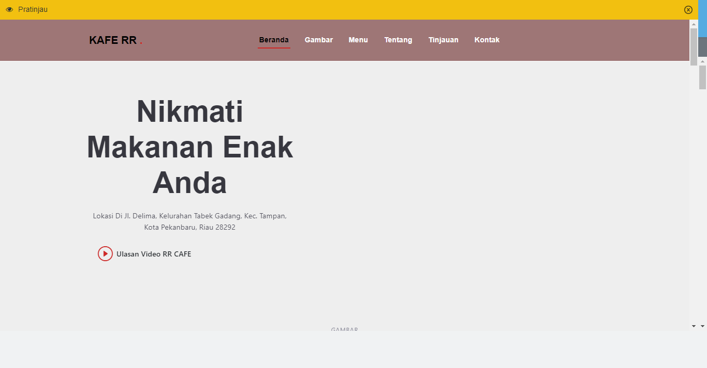

Desain Café RR Delima

Website ini dirancang untuk Café RR Delima dengan fokus pada tampilan yang responsif dan desain yang menarik. Tujuan dari proyek ini adalah untuk menyediakan situs web yang tidak hanya estetis tetapi juga fungsional, memastikan pengalaman pengguna yang mulus baik di desktop maupun perangkat mobile. Menggunakan teknologi HTML, CSS, dan Bootstrap, desain ini memudahkan pengunjung untuk menjelajahi menu, mengetahui informasi tentang kafe, dan menemukan lokasi dengan cepat. Teknologi ini juga mendukung responsivitas, memastikan situs tetap optimal dan menarik di berbagai ukuran layar.
Lihat ProjectE-commerce Website


Website e-commerce ini adalah solusi belanja online yang dirancang untuk memberikan pengalaman pengguna yang intuitif dan menyenangkan. Proyek ini mengintegrasikan beberapa fitur kunci untuk meningkatkan efisiensi dan kepuasan pelanggan:
- Halaman Utama: Menyajikan berbagai produk unggulan, penawaran spesial, dan kategori terpopuler dengan desain yang memikat.
- Fitur Pencarian: Memudahkan pengguna untuk menemukan produk yang mereka cari dengan fitur pencarian yang cepat dan akurat.
- Kategori Produk: Menawarkan berbagai kategori produk untuk memudahkan pengguna dalam menavigasi dan menemukan barang yang diinginkan.
- Halaman Detail Produk: Menampilkan gambar produk berkualitas tinggi, deskripsi rinci, ulasan pelanggan, dan opsi varian produk, seperti ukuran atau warna.
- Keranjang Belanja: Fitur keranjang belanja yang mudah digunakan untuk menambahkan, menghapus, atau mengubah jumlah produk sebelum checkout.
- Proses Checkout: Proses pembayaran yang sederhana dengan berbagai opsi pembayaran, termasuk kartu kredit dan metode pembayaran digital.
- Akun Pengguna: Fitur untuk membuat dan mengelola akun pengguna, melacak riwayat pesanan, dan mengelola informasi akun.
- Multi-Seller: Mendukung berbagai penjual untuk menjual produk mereka di platform yang sama, memungkinkan penjual untuk mengelola toko mereka sendiri, menambahkan produk, dan memproses pesanan secara independen.
- Rating Bintang: Fitur rating bintang memungkinkan pengguna untuk memberikan penilaian terhadap produk berdasarkan pengalaman mereka. Fitur ini membantu calon pembeli dalam membuat keputusan yang lebih baik dengan melihat ulasan dan rating yang diberikan oleh pengguna lain.
- Responsif dan Mobile-Friendly: Desain responsif memastikan tampilan yang optimal di berbagai perangkat, termasuk smartphone, tablet, dan desktop.
- Keamanan: Implementasi protokol keamanan untuk melindungi data pengguna dan transaksi online.
- Lupa Password: Fitur pemulihan akun melalui email yang terdaftar untuk membantu pengguna mengatur ulang password jika mereka lupa.
- Aktivasi Akun: Pengguna dapat mengaktifkan akun mereka melalui email yang terdaftar, memastikan keamanan dan validitas akun mereka.
- Ongkir Pengantaran: Integrasi dengan RajaOngkir untuk menghitung biaya pengiriman berdasarkan lokasi dan berat produk.
- Hitung Keuntungan dan Stok: Penjual dapat menghitung keuntungan, jumlah produk terjual, dan memantau stok barang secara real-time melalui dashboard penjual.
- Konfirmasi Pembayaran: Pengguna dapat mengirimkan bukti pembayaran ke sistem, dan sistem akan mengkonfirmasi pembayaran tersebut kepada penjual.
- Lacak Pemesanan: Penjual dapat melacak status pemesanan dan, setelah konfirmasi pembayaran berhasil, akan mengirimkan nomor resi pengiriman kepada pengguna. Pengguna dapat menggunakan nomor resi untuk melacak status pengiriman secara real-time.